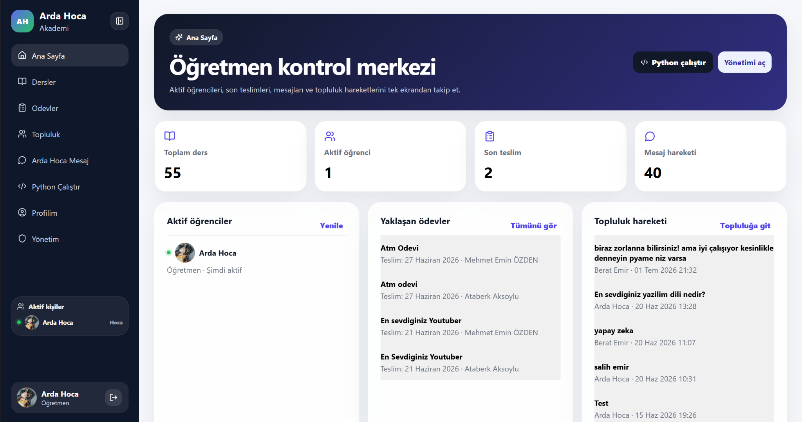

01
Web site tasarımı
Kurumsal site, sanatçı portfolyosu, kişisel marka sayfası, kafe/restoran tanıtımı ve tek sayfalık tanıtım siteleri.
Yeni markalar, kafeler, sanatçılar ve kurumsal işler için sade görünen ama güçlü çalışan web siteleri kuruyoruz. Tasarım, metin akışı, mobil görünüm ve yayına alma süreci tek elde toparlanır.
Bir işletmenin internette ilk izlenimi çoğu zaman web sitesiyle oluşur. Bu yüzden tasarım, metin, sayfa akışı ve mobil görünümü birlikte düşünüyoruz.
Kurumsal site, sanatçı portfolyosu, kişisel marka sayfası, kafe/restoran tanıtımı ve tek sayfalık tanıtım siteleri.
İhtiyaca göre admin panel ekleyerek görsel, yazı, ürün, galeri, fiyat ve duyuru alanlarının sonradan güncellenmesini sağlıyoruz.
Domain, hosting, temel SEO ayarları, performans düzenlemeleri ve yayın sonrası küçük revizeleri proje sürecine dahil ediyoruz.
Her kartın detay sayfasında projenin ne amaçla hazırlandığını, hangi alanları içerdiğini ve varsa canlı site bağlantısını görebilirsiniz.

Tablo ve özel sipariş işlerini daha profesyonel göstermek için hazırlanan, galeri mantığı güçlü ve admin panelle yönetilebilir sanatçı web sitesi.
Detayları gör →Low-poly metal heykel üretimini Amerika pazarına uygun, güven veren ve teklif almaya yönlendiren modern bir marka vitriniyle anlatan site.
Detayları gör →Zipline, zipcoaster, dev salıncak ve macera parkı sistemlerini ayrı hizmet detaylarıyla anlatan kurumsal web sitesi yapısı.
Detayları gör →
Öğretmen, ders, ödev, öğrenci ve mesaj akışını tek panelde toplayan; eğitim tarafında düzenli ve modern bir kontrol sistemi sunan platform arayüzü.
Detayları gör →Burada amaç sadece kod yazmak değil; işletmenin ne sunduğunu, kimlere ulaşmak istediğini ve web sitesinin ziyaretçiye ne söylemesi gerektiğini netleştirmek. Sonra buna uygun tasarım, sayfa yapısı ve içerik düzeni hazırlanır.
İşletme ne yapıyor, hangi sayfalar lazım, ziyaretçi sitede neyi görmeli; önce bunu netleştiriyoruz.
Logo, renk, görseller ve metinler markaya göre düzenleniyor. Mobil görünüm ayrıca kontrol ediliyor.
Site yayına alınıyor; domain, hosting, temel SEO ve küçük revizelerle kullanıma hazır şekilde teslim ediliyor.
Kurulum ücreti olmadan aylık yayın modeli, düşük kurulum + aylık yayın & bakım veya tek seferlik teslim seçeneklerinden biriyle ilerleyebiliriz. Net fiyat; sitenin kapsamına, sayfa sayısına ve istenen özelliklere göre belirlenir.
Başlangıçta kurulum ücreti alınmaz. Site ARD Digital yönetiminde hazırlanır ve aylık ödeme devam ettiği sürece yayında kalır.
Aylık yayın & bakım 200 TL’den başlar. Başta daha düşük kurulum ödeyip düzenli teknik takip isteyen işletmeler için.
Aylık ödeme istemeyen müşteriler için site hazırlanır ve teslim edilir. Sonraki destek ve güncellemeler ayrıca fiyatlandırılır.
Kurulum ücreti olmayan aylık yayın modelinde web sitesi dosyaları ve yayın altyapısı ARD Digital yönetiminde kalır; ödeme aksarsa site yayından alınabilir.
Kafe, sanatçı, kurumsal firma, kişisel marka, eğitim projesi veya özel bir fikir için kısa bir mesaj gönderebilirsiniz.